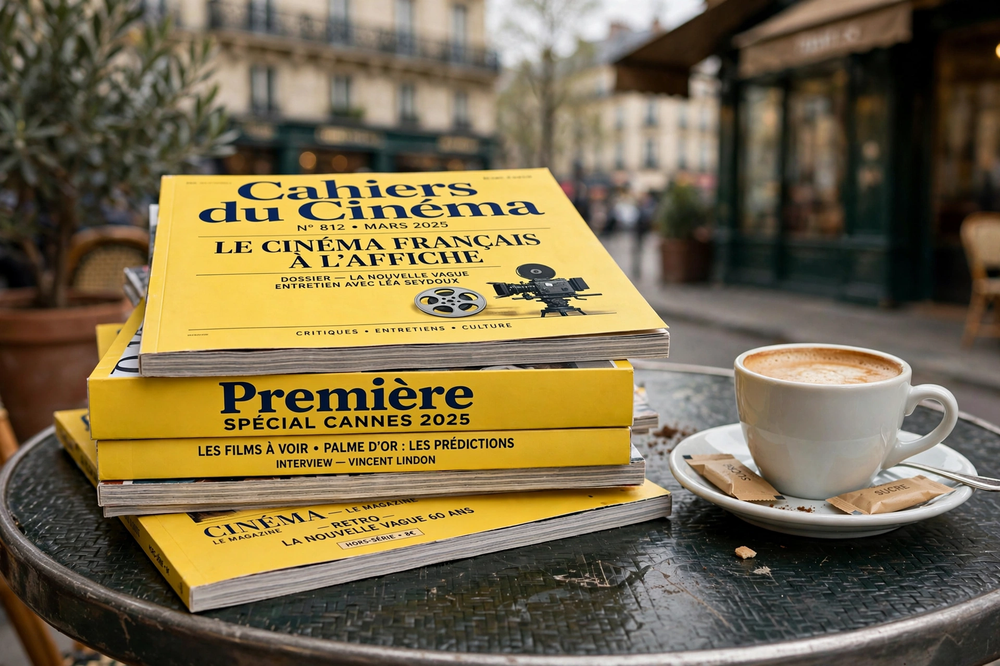

| Cahiers du Cinéma | |
|---|---|
 The yellow-covered Cahiers du Cinéma | |
| Founded | 1951, Paris, France |
| Founders | André Bazin, Jacques Doniol-Valcroze, Joseph-Marie Lo Duca |
| Known for | Auteur theory; launching the French New Wave |
| Language | French |
Cahiers du Cinéma (French for "Notebooks on Cinema") is a French film magazine founded in 1951 by André Bazin, Jacques Doniol-Valcroze and Joseph-Marie Lo Duca. It has been called the most influential film magazine in history. Its young critics of the 1950s — François Truffaut, Jean-Luc Godard, Éric Rohmer, Jacques Rivette and Claude Chabrol, nicknamed the "young Turks" — developed the auteur theory and went on to become the core directors of the French New Wave.
The magazine championed mise-en-scène over literary screenwriting, attacked the French "Tradition of Quality," and revalued Hollywood directors such as Alfred Hitchcock, Howard Hawks, John Ford and Nicholas Ray as true authors of their films; it also embraced genre cinema, including the American film noir adaptations of writers like James M. Cain. Truffaut's 1954 polemic "A Certain Tendency of the French Cinema" served as the New Wave's manifesto. Godard's Breathless (1960), made by a Cahiers critic, embodied the new cinema. After May 1968 the magazine turned sharply towards Maoist ideology and film theory, before returning to a broader cinephilia in the late 1970s under editors such as Serge Daney. Its annual top-ten lists remain widely watched.
Cahiers shaped film criticism worldwide, inspired journals and critics in many countries, and was a formative influence on the directors of the American New Hollywood of the 1970s.